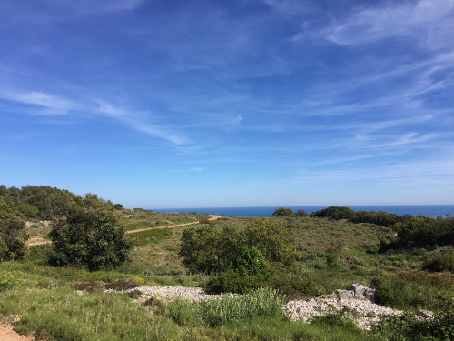
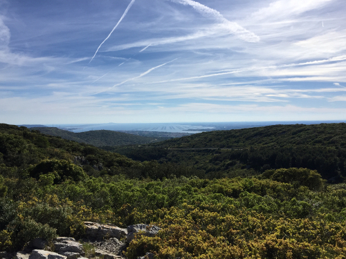
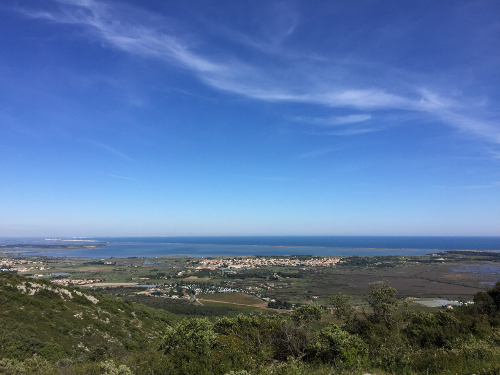
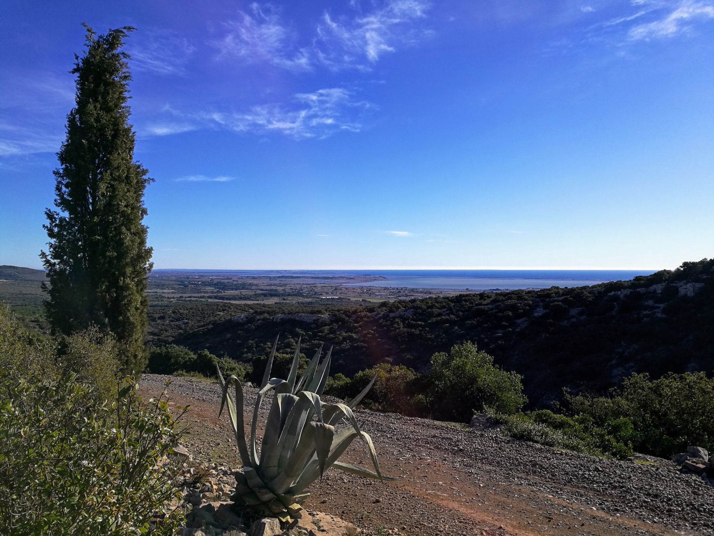
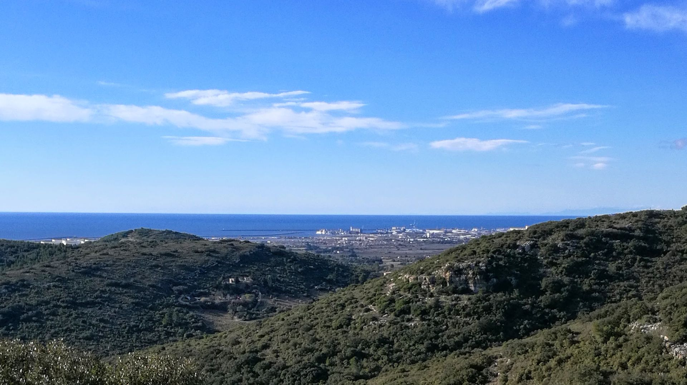
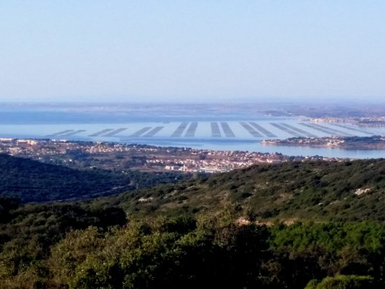
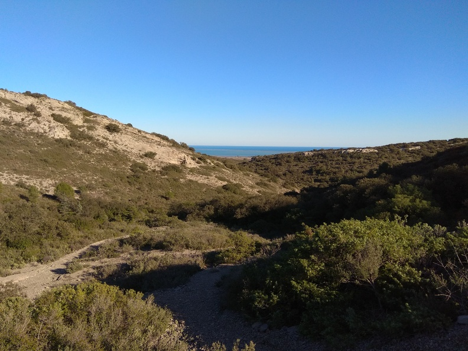
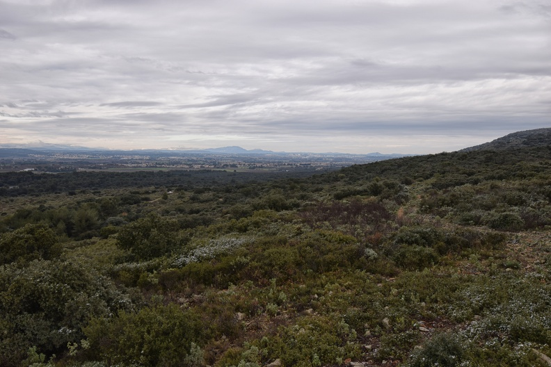
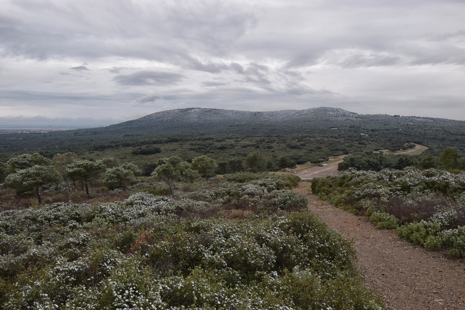
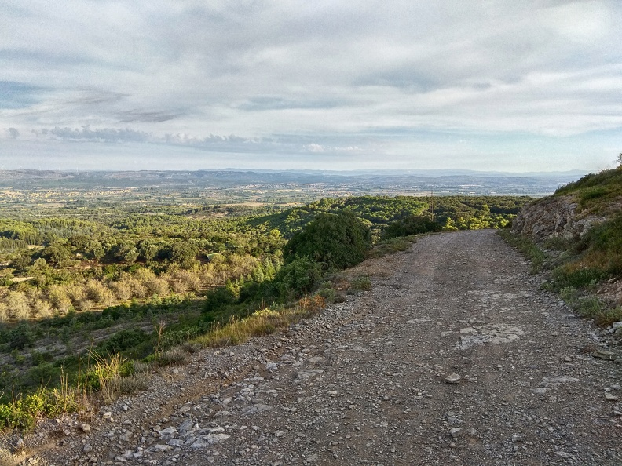

Randonnée Les belvédères de la Gardiole











Description de l'événement
Le sentier de randonnée caillouteux nous emmène à la découverte du massif de la Gardiole et de sa végétation si particulière. Arrivés au point culminant du circuit, le point de vue est somptueux : tout autour de nous, de la verdure, l’abbaye en arrière-plan, et au loin, la lagune de Thau et son bleu scintillant. Une belle récompense pour si peu d’efforts, pour nous qui avons opté pour le circuit de deux heures ! Une fois la randonnée terminée, nous profitons des tables de pique-nique pour faire goûter les enfants et admirer encore un peu l’abbaye qui se dresse devant nous. Le massif de la Gardiole pouvait également se découvrir à dos d’ânes. Ce sera l’occasion de revenir !
Détails de l'événement
- Type : Randonnée pédestre
- Distance : 13 km
- Date : 15 mars 2026
- Heure de départ : 10h30
- Heure d'arrivée : 15h00
- Durée : Environ 4h30
- Lieu de rendez-vous : Parking de la Tortue Fabregues
- Lieu d'arrivée : Parking point de départ
- Niveau de difficulté : moyen
- Équipement recommandé : Chaussures de randonnée, eau, chapeau, crème solaire
- Tarif : 20€ par personne (inclut le guide et les frais d'entrée)
- Accessibilité : Sentiers accessibles aux personnes à mobilité réduite
- Dénivelé : 250 mètres
- Altitude maximale : 300 mètres
- Point d'eau / ravitaillement : Pas de point d'eau. Aire de pique-nique
Inscrivez-vous dès maintenant pour participer à cet événement !
Pour toute question, n'hésitez pas à Nous contacter